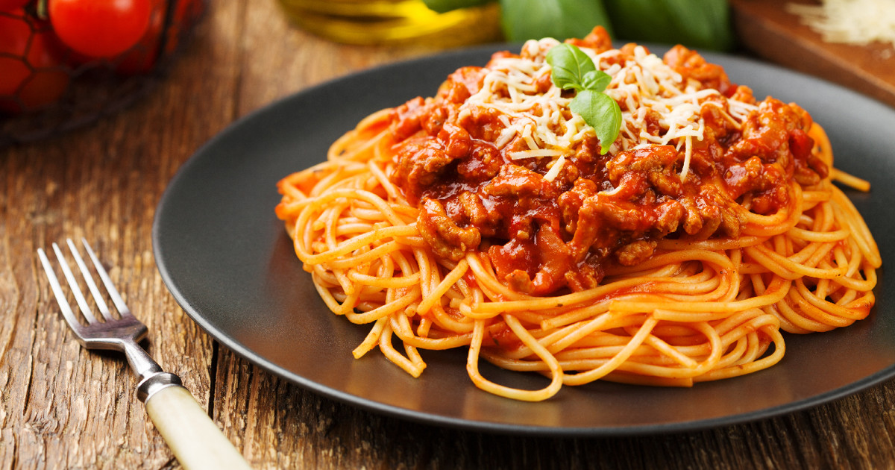

Pasta Recipe
Home

Spaghetti Bolognese Recipe
Spaghetti Bolognese is a traditional Italian pasta dish loved all around the world. It features perfectly cooked spaghetti topped with a rich and flavorful meat sauce made from minced beef, tomatoes, onions, garlic, and a blend of herbs and spices. The slow-cooked sauce gives it a deep, comforting taste that makes every bite unforgettable — a true classic of Italian cuisine!
Ingredients:
- 400g (14 oz) spaghetti
- 2 tablespoons olive oil
- 1 onion, finely chopped
- 2 garlic cloves, minced
- 400g (14 oz) minced beef
- 1 carrot, finely chopped
- 1 celery stick, finely chopped
- 400g (14 oz) canned chopped tomatoes
- 2 tablespoons tomato paste
- 1 teaspoon dried oregano
- 1 teaspoon dried basil
- Salt and black pepper to taste
- Fresh parsley (for garnish)
- Grated Parmesan cheese (optional)
Steps:
- Cook the spaghetti according to the package instructions. Drain and set aside.
- Heat olive oil in a large pan over medium heat. Add the chopped onion and garlic, and sauté until soft and fragrant.
- Add the minced beef and cook until browned, breaking it apart with a spoon as it cooks.
- Stir in the chopped carrot and celery, cooking for another 5 minutes.
- Add the chopped tomatoes, tomato paste, oregano, and basil. Season with salt and pepper.
- Reduce the heat and let the sauce simmer gently for 20–30 minutes, stirring occasionally.
- Combine the cooked spaghetti with the sauce and toss well to coat.
- Serve hot, garnished with fresh parsley and grated Parmesan cheese if desired.